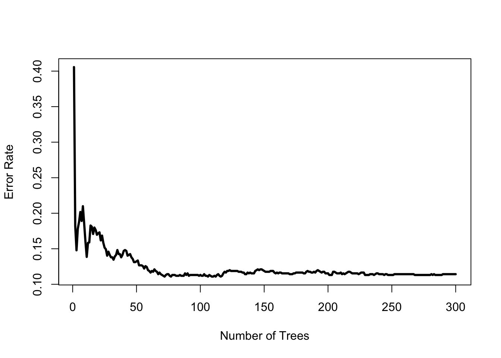

In the second example, we present the RandomForest Proximity matrix as distance measure and the ovarian data set from the survival package. In the first step we initialize the R6 data object. The initialization needs several inputs:
Arguments:
| learning | data set for learning the RandomForest |
| verumData | Verum data set. For each case in the verum data, we are looking for the m (=1,…,k) similar cases. Learning and verum data set need the same structure (variable names and scales) |
| learnVars (optional) | A character vector variable names. This variables are used for learning the model. Do not include time2event and event variable here. Default: all variables, except endPoint variables, are used for model fitting. |
| endPoint (optional) | A character vector of length two. The first elements contains the variable name of the time 2 event variable and the second the name of the event variable. Default: c("Time2Event", "Event") |
| impute (optional) | TRUE/FALSE: Missing value imputation (see randomForestSRC-Package for documentation. |
library(survival)
library(cbr)
ovarian$resid.ds <- factor(ovarian$resid.ds)
ovarian$rx <- factor(ovarian$rx)
ovarian$ecog.ps <- factor(ovarian$ecog.ps)
# initialize R6 object
sc <- cbrRFProxy$new(learning=ovarian, verumData=ovarian, learnVars=c("age", "resid.ds", "rx", "ecog.ps"), endPoint=c("futime", "fustat"), impute=T)If impute is set to FALSE (for the Cox model the ìmpute variable is always set to FALSE) then all cases with missing values in the learning and end point variables are dropped (na.omit) and the reduced data set without missing values is saved internally. You get a text output on how many cases were dropped. The variables should be numeric or factor.
Optionally, you may want to adjust some parameters in the fitting step of the random forest algorithm. Possible arguments are: nCores, ntree, mtry, splitrule, ntime, nsplit, and verbose. The documentation of this parameters can be found in the randomForestSRC R-package.
sc$learn()## Start learning...
## Random Forest for Survival calculation finished in: 0.11 seconds.All other steps (excluding checking for linearity and proportional hazard assumption are the same as for the Cox-model).